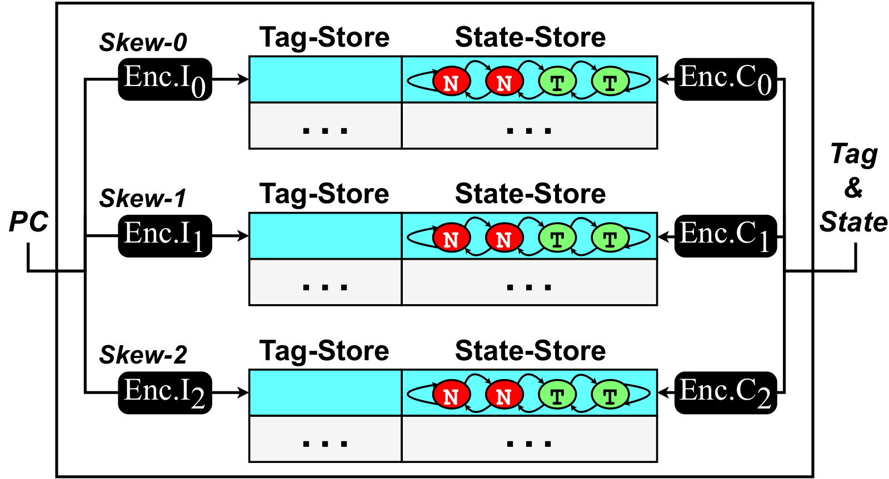

CIBPU: A Conflict-Invisible Secure Branch Prediction Unit
IEEE Transactions on Information Forensics & Security (TIFS) 2026

Abstract
Previous schemes for designing secure branch prediction unit (SBPU) based on physical isolation can only offer limited security and significantly affect BPU's prediction capability, leading to prominent performance degradation. Moreover, encryption-based SBPU schemes based on periodic key re-randomization have the risk of being compromised by advanced attack algorithms, and the performance overhead is also considerable. To this end, this paper proposes a conflict-invisible SBPU (CIBPU). CIBPU employs redundant storage design, load-aware indexing, and replacement design, as well as an encryption mechanism without requiring periodic key updates, to prevent attackers' perception of branch conflicts. We provide a thorough security analysis, which shows that CIBPU achieves strong security throughout the BPU's lifecycle. We implement CIBPU in a RISC-V core model in gem5. The experimental results show that CIBPU causes an average performance overhead of only 1.12%-2.20% with acceptable hardware storage overhead, which is the lowest among the state-of-the-art SBPU schemes. CIBPU has also been implemented in the open-source RISC-V core, SonicBOOM, which is then burned onto an FPGA board. The evaluation based on the board shows an average performance degradation of 2.01%, which is approximately consistent with the result obtained in gem5.
Resources
Citation
@inproceedings{ZCJTWZM26,
author = {Zhe Zhou and Xiaoyu Cheng and Fang Jiang and Fei Tong and Hongyu Wang and Zhikun Zhang and Yuxing Mao},
title = {{CIBPU: A Conflict-Invisible Secure Branch Prediction Unit}},
booktitle = {{Transactions on Information Forensics and Security}},
publisher = {IEEE},
year = {2026},
}